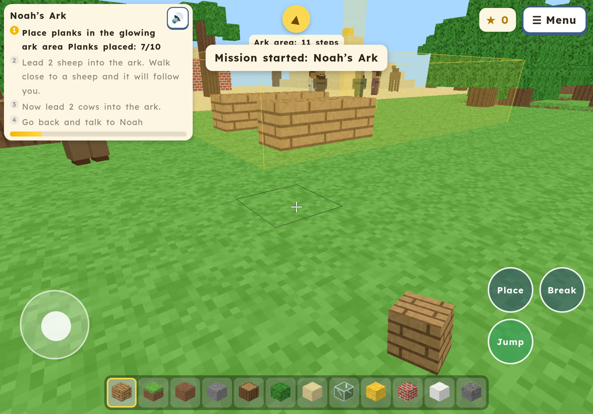
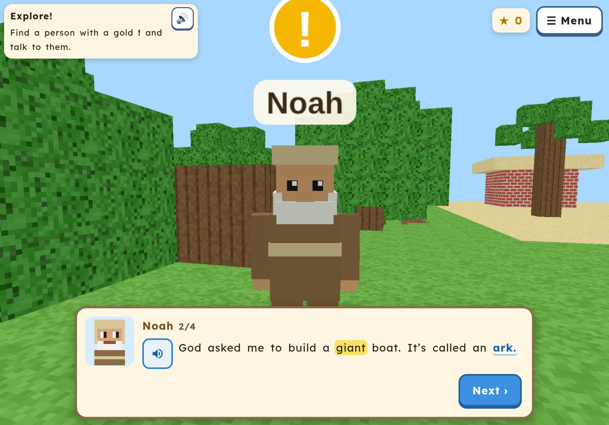
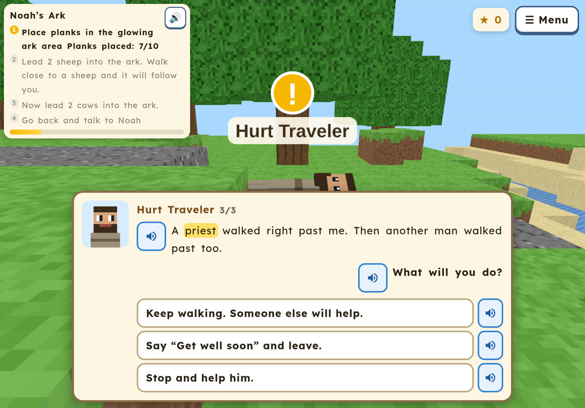
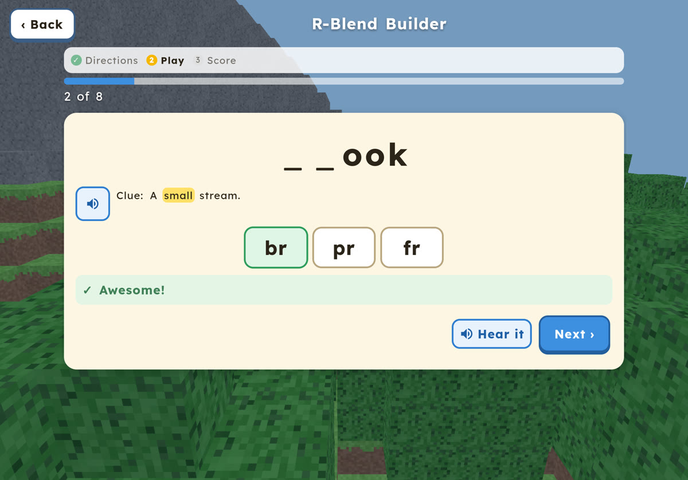
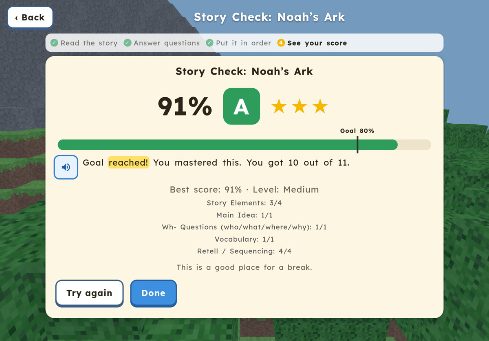
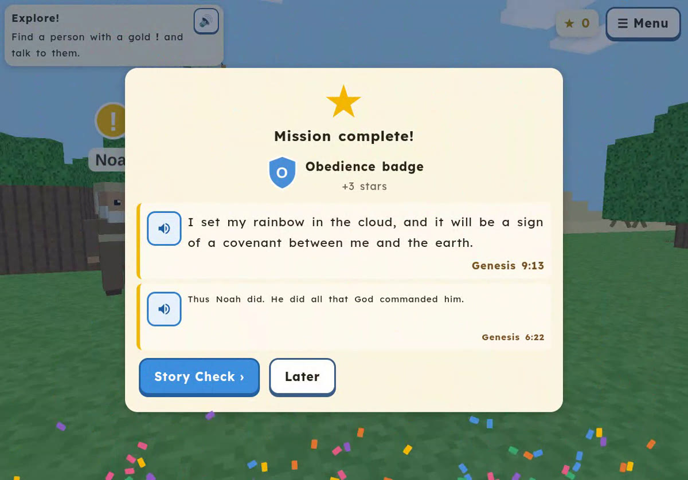

Take a look






What’s inside
7 Bible missions
Explore a friendly block world and help Bible friends:
- Noah’s ark
- David the shepherd
- Moses
- The Good Samaritan
- Loaves and fish
- Joseph forgives his brothers
- Honesty
Stories read aloud
A warm, natural voice reads every story, and each word is highlighted as it is spoken.
Phonics and reading games
Short phonics and reading-comprehension games with grades and stars.
Bonus stars for reading aloud
Kids can read words and sentences out loud to earn extra stars.
Easy-to-read text
A dyslexia-friendly font, big text, and extra spacing. Difficulty from 1st to 3rd grade reading.
Strictly clean
No violence and no romance. Just building, exploring, and kind choices.
For parents
Faith Craft practices reading skills while your child plays. It is a game and reading practice, not a medical or therapy product.
- Parent report card: see reading level, stars, words learned, and skill scores.
- Grades and stars after each phonics game and story check.
- Adjustable difficulty from 1st to 3rd grade reading.
- Nothing to buy. No ads, no purchases, no chat with strangers.
Made by a mom for her son who loves the Bible and is learning to read.
Privacy
Faith Craft collects no information about your child.
- No data collected. Progress is saved only on your own iPad.
- No accounts and no sign-up.
- No ads, no trackers, and no purchases.
- No chat. Your child cannot talk to strangers.
- Works offline. Once it is on your iPad, it does not need the internet.
This page uses no cookies, analytics, or outside services.
Add to Home Screen on iPad
Put Faith Craft on your iPad like an app, so it opens full screen and works offline.
- Open this page in Safari on the iPad.
- Tap Play Faith Craft and wait for the game to load.
- Tap the Share button (the square with an arrow pointing up).
- Tap Add to Home Screen, then Add. Look for the ark icon!